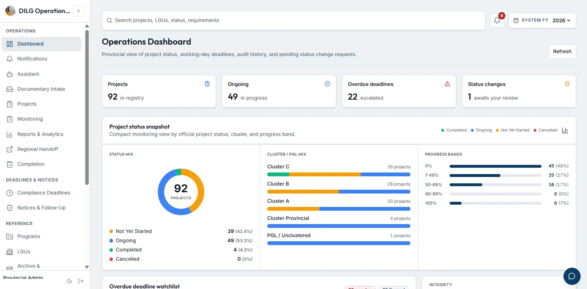

The challenge
Disconnected records make it difficult to monitor requirements consistently across LGUs, projects and program phases.
DESIGNED FOR DILG-PDMU LAGUNA
From scattered submissions to a shared picture of compliance. Meet COMET, a centralized workspace built around the people keeping local projects moving.
A BS Information Technology capstone · LSPU Santa Cruz · 2026

01 / THE RESEARCH
Public service, thoughtfully connected.Thirty local government units. Multiple programs. One need for a reliable view of documentary compliance.
In DILG-PDMU Laguna, documentary monitoring spans separate spreadsheets and Google Drive folders. Staff have to piece together submission histories, deadlines and review decisions before they can see the whole picture.
This project brings those workflows into a single internal platform, from document intake through monitoring, reporting and regional handoff.
Explore the study ↘Disconnected records make it difficult to monitor requirements consistently across LGUs, projects and program phases.
Design, develop and evaluate an internal web platform that consolidates the PDMU’s documentary compliance workflow.
Develop iteratively with stakeholder feedback, test core workflows, and evaluate acceptance among personnel and field-side officers.
02 / INSIDE COMET
Purposeful tools. Connected workflows.Explore actual interfaces reproduced from the research manuscript. Select a workflow to take a closer look.
An operations dashboard brings project counts, compliance indicators and program status into a shared view.
Source: system interface figures in the supplied Chapters 1–5 manuscript. Screenshots reflect the documented version; the live system may differ.
Document upload, version history and review workflows keep submissions connected to their requirements.
Deadline tracking and notice management support timely follow-through on outstanding compliance.
Analytics, reports and audit trails make operational information easier to review and trace.
OCR/NLP tools, document matching and a smart assistant support documentary processing and navigation.
03 / METHODOLOGY
Grounded in practice. Refined in iterations.A descriptive developmental study, guided by Agile development.
The research combines an understanding of the existing workflow with iterative implementation, functional testing and user acceptance evaluation.
Identify how PDMU personnel and field-side officers record, review and follow up submissions.
Translate requirements into connected modules and refine them through development iterations.
Evaluate functionality across the system’s major modules and documented test steps.
Gather participant feedback on quality, ease of use, attitude, intention and user experience.
04 / REPORTED FINDINGS
Evidence from the study.The supplied manuscript reports the following results. These describe the study’s evaluation, rather than a guarantee of future performance.
In the user acceptance evaluation
Interpreted as Highly Acceptable
Across 13 core modules; reported 100% success
05 / THE STUDY, AT A GLANCE
Five chapters. One connected story.Explore a concise guide to the research. These summaries introduce the study; they do not reproduce the full manuscript or its appendices.
Open research brief ↗Establishes the fragmented monitoring context, the need for a centralized internal platform, and the objectives of designing, developing and evaluating COMET for DILG-PDMU Laguna.
Examines related work in compliance monitoring, document management and government information systems to situate the project and its intended contribution.
Describes the developmental research approach, Agile development, system architecture, functional testing and the evaluation of user acceptance.
Presents the implemented interfaces and workflows alongside functional testing and participant evaluation. The abstract reports 147 successful test steps and an acceptance grand mean of 4.30.
Brings together the study’s development and evaluation outcomes and discusses directions for continued refinement and use.
06 / THE PEOPLE BEHIND COMET
Built with purpose, together.BS Information Technology · College of Computer Studies
Laguna State Polytechnic University, Santa Cruz
FROM RESEARCH TO A WORKING SYSTEM
Visit the deployed application or explore the code behind the project.
Application features requiring authentication are available to authorized users.